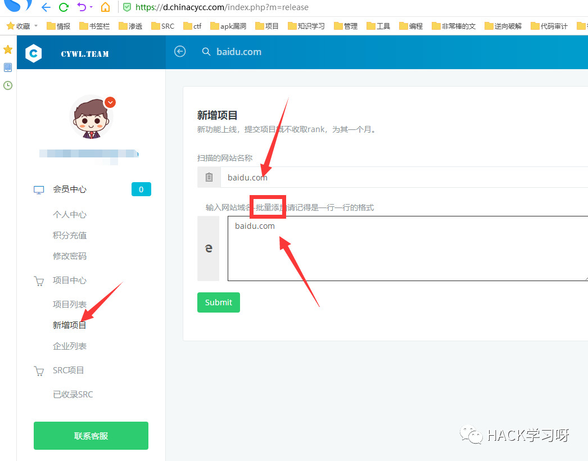
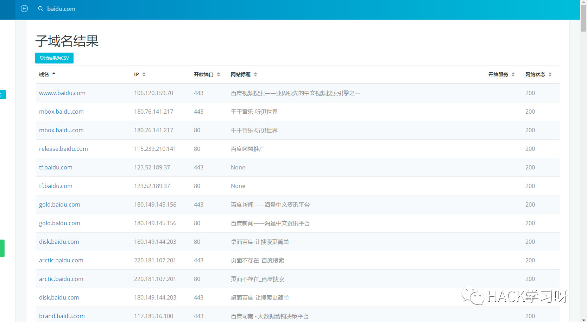
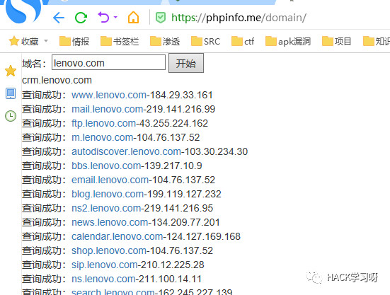
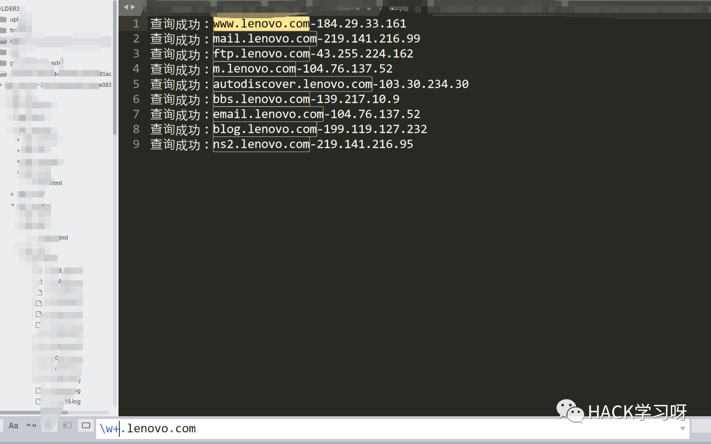
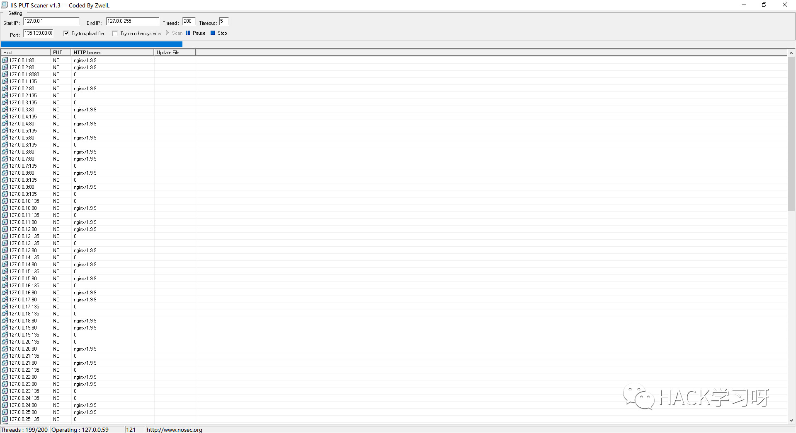
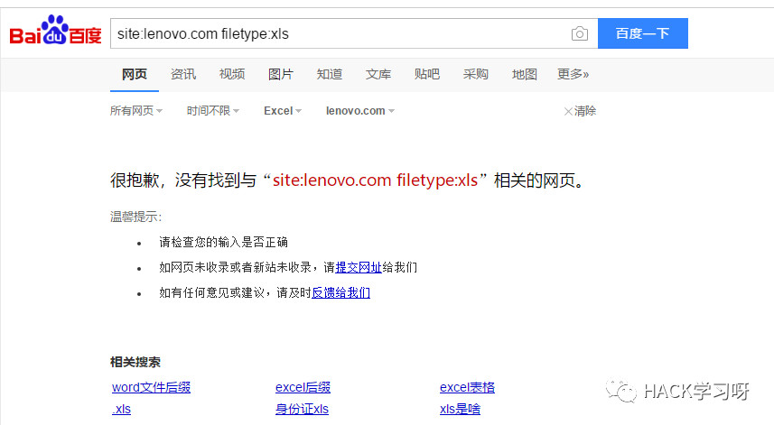
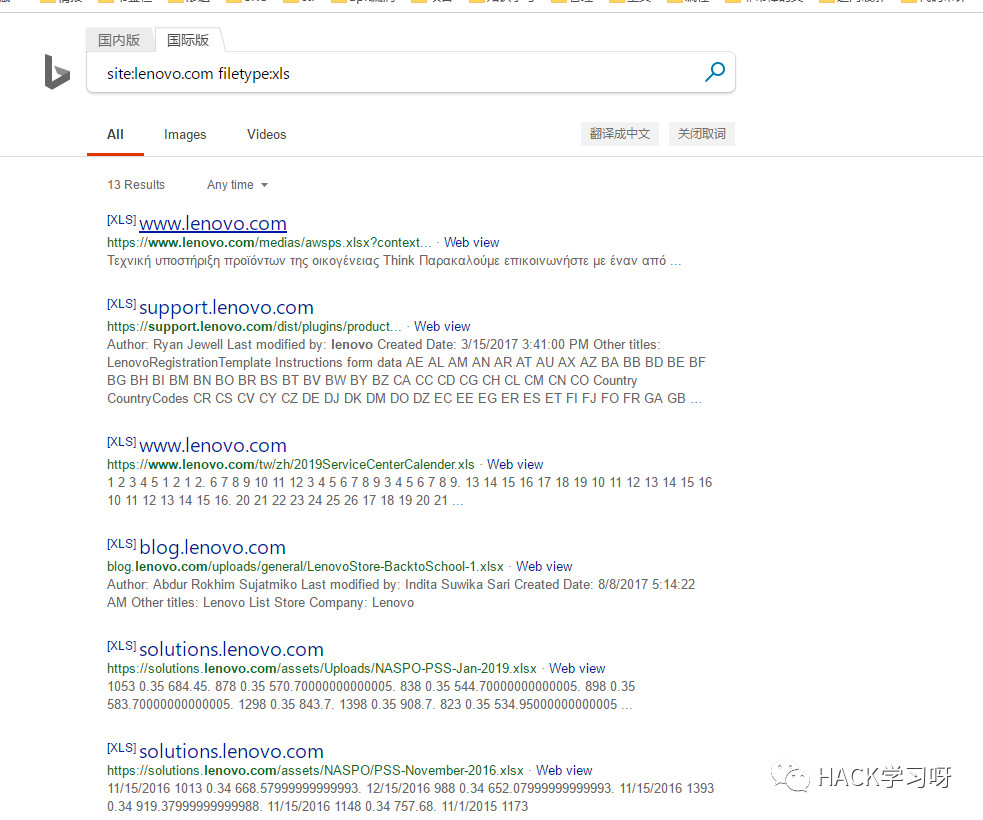
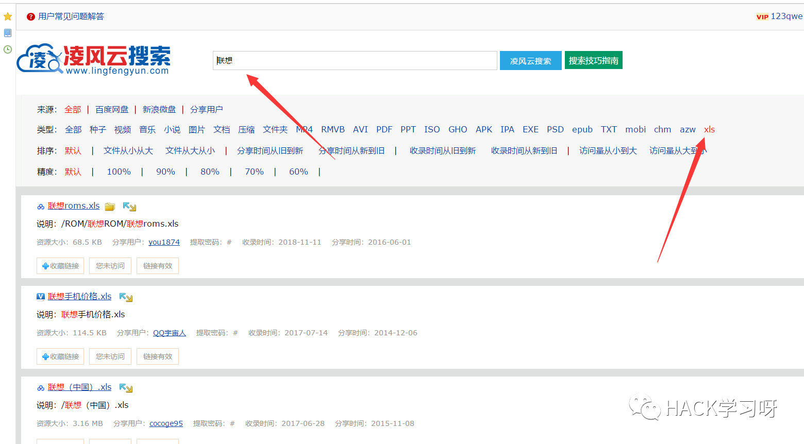
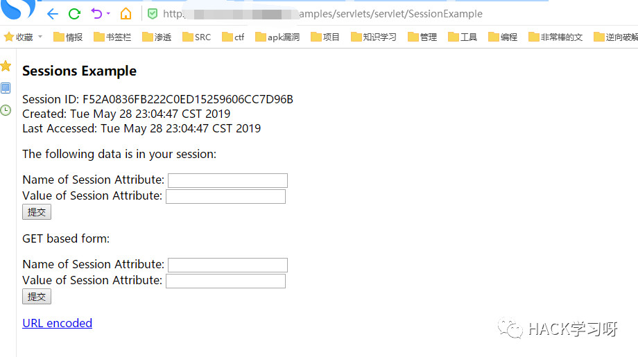
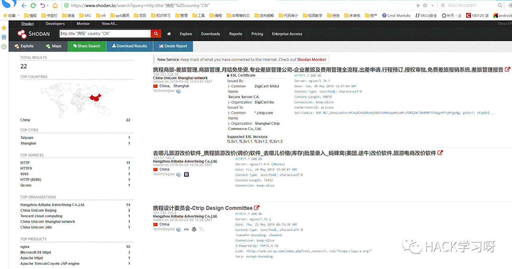

漏洞挖掘之信息收集
原创投稿，作者：Only_Free
对一个网站挖掘的深浅来说就得看你收集的如何，这说明信息收集在漏洞挖掘中是非常的重要的。
子域名收集
子域名收集是最简单的收集手法之一，有很多在线的工具可以直接套用，这里分享几个我经常用的。
开心的时候用用这个扫描器
为什么这么说，因为这是我写的（你生气用的话我怕我屏幕里突然冒出一个拖孩）
import requests
import threading
from bs4 import BeautifulSoup
import re
import time
url = input( 'url(如baidu.com): ' )
head={'User-Agent':'Mozilla/5.0 (Windows NT 10.0; WOW64) AppleWebKit/537.36 (KHTML, like Gecko) Chrome/58.0.3029.110 Safari/537.36 SE 2.X MetaSr 1.0'}
ip = 'http://site.ip138.com/{}'.format( url )
# domain_url = url.split('.')
# domain_url = domain_url[1]+'.'+domain_url[2]
domain_url = url
domain = 'http://site.ip138.com/{}/domain.htm'.format( domain_url )
t = time.strftime("%Y-%m-%d"+'_', time.localtime())
html_file = open( url+'_'+t+'.html','w' )
html_file.write( '''
<head>
<title>%s的扫描结果</title>
<link rel="stylesheet" href="https://cdn.staticfile.org/twitter-bootstrap/3.3.7/css/bootstrap.min.css">
<script src="https://cdn.staticfile.org/jquery/2.1.1/jquery.min.js"></script>
<script src="https://cdn.staticfile.org/twitter-bootstrap/3.3.7/js/bootstrap.min.js"></script>
<style>
pre{
margin: 0 0 0px;
}
</style>
</head>
<ul id="myTab" class="nav nav-tabs navbar-fixed-top navbar navbar-default">
<li class="active">
<a href="#ip" data-toggle="tab">
IP历史解析
</a>
</li>
<li><a href="#cms" data-toggle="tab">CMS识别</a></li>
<li><a href="#domain" data-toggle="tab">子域名信息</a></li>
</ul>
<br>
<br>
<br>
<br>
<div id="myTabContent" class="tab-content">
'''%url )
class IP( threading.Thread ):
def __init__(self, ip):
threading.Thread.__init__(self)
self.ip = ip
def run(self):
r = requests.get( self.ip,headers = head )
html = r.text
bs = BeautifulSoup(html, "html.parser")
html_file.write('<div class="tab-pane fade in active" id="ip">')
for i in bs.find_all('p'):
ipc = i.get_text()
ip_html = '<pre>{}</pre>'.format( ipc )
html_file.write( ip_html )
html_file.write('</div>')
class CMS( threading.Thread ):
def __init__(self, cms):
threading.Thread.__init__(self)
self.cms = cms
def run(self):
cms = requests.post('http://whatweb.bugscaner.com/what/', data={'url': self.cms}, headers = head)
text = cms.text
Web_Frameworks = re.search('"Web Frameworks": "(.*?)"]', text)
Programming_Languages = re.search('"Programming Languages":(.*?)"]', text)
JavaScript_Frameworks = re.search('"JavaScript Frameworks": (.*?)"]', text)
CMS = re.search('"CMS": (.*?)"]', text)
Web_Server = re.search('"Web Servers": (.*?)"]', text)
if CMS:
CMS = CMS.group(1)+'"]'
if Programming_Languages:
Programming_Languages = Programming_Languages.group(1)+'"]'
if JavaScript_Frameworks:
JavaScript_Frameworks = JavaScript_Frameworks.group(1)+'"]'
if Web_Frameworks:
Web_Frameworks = Web_Frameworks.group(1)+'"]'
if Web_Server:
Web_Server = Web_Server.group(1)+'"]'
html = '''
<div class="tab-pane fade" id="cms">
<div class="table-responsive">
<table class="table table-condensed">
<tr>
<th>web框架</th>
<th>脚本版本</th>
<th>JavaScript框架</th>
<th>CMS框架</th>
<th>web服务器</th>
</tr>
<tr>
<td>{0}</td>
<td>{1}</td>
<td>{2}</td>
<td>{3}</td>
<td>{4}</td>
</tr>
</table>
</div>
</div>
'''.format(Web_Frameworks,Programming_Languages,JavaScript_Frameworks,CMS,Web_Server)
html_file.write( html )
class DOMAIN( threading.Thread ):
def __init__(self, domain):
threading.Thread.__init__(self)
self.domain = domain
def run(self):
r = requests.get( self.domain,headers = head )
html = r.text
bs = BeautifulSoup(html, "html.parser")
html_file.write('<div class="tab-pane fade in active" id="domain"')
num = 0
for i in bs.find_all('p'):
num += 1
html_file.write( '<br>' )
domainc = i.get_text()
domain_html = '<pre>[{}]： {}</pre>'.format( num,domainc )
html_file.write( domain_html )
print( domain_html )
html_file.write('</div>')
ip_cls = IP(ip)
ip_html = ip_cls.run()
cms_cls = CMS(url)
cms_html = cms_cls.run()
domain_cls = DOMAIN( domain )
domain_html = domain_cls.run()github上开源的子域名扫描器
https://github.com/lijiejie/subDomainsBrute
https://github.com/chuhades/dnsbrute
在线网站收集
1，
https://d.chinacycc.com/（非常推荐）

然后不到30秒就出结果了

2，
http://z.zcjun.com/
https://phpinfo.me/domain/
端口信息收集
扫描端口并且标记可以爆破的服务
nmap 目标 --script=ftp-brute,imap-brute,smtp-brute,pop3-brute,mongodb-brute,redis-brute,ms-sql-brute,rlogin-brute,rsync-brute,mysql-brute,pgsql-brute,oracle-sid-brute,oracle-brute,rtsp-url-brute,snmp-brute,svn-brute,telnet-brute,vnc-brute,xmpp-brute判断常见的漏洞并扫描端口
nmap 目标 --script=auth,vuln精确判断漏洞并扫描端口
nmap 目标 --script=dns-zone-transfer,ftp-anon,ftp-proftpd-backdoor,ftp-vsftpd-backdoor,ftp-vuln-cve2010-4221,http-backup-finder,http-cisco-anyconnect,http-iis-short-name-brute,http-put,http-php-version,http-shellshock,http-robots.txt,http-svn-enum,http-webdav-scan,iis-buffer-overflow,iax2-version,memcached-info,mongodb-info,msrpc-enum,ms-sql-info,mysql-info,nrpe-enum,pptp-version,redis-info,rpcinfo,samba-vuln-cve-2012-1182,smb-vuln-ms08-067,smb-vuln-ms17-010,snmp-info,sshv1,xmpp-info,tftp-enum,teamspeak2-version 我喜欢这样做
如图1所示，扫描子域名

提取出域名/ip

然后把域名放到975.txt
2，批量扫描端口和漏洞检测
nmap -iL 975.txt --script=auth,vuln,ftp-brute,imap-brute,smtp-brute,pop3-brute,mongodb-brute,redis-brute,ms-sql-brute,rlogin-brute,rsync-brute,mysql-brute,pgsql-brute,oracle-sid-brute,oracle-brute,rtsp-url-brute,snmp-brute,svn-brute,telnet-brute,vnc-brute,xmpp-brute > scan.txt然后根据对应开放的端口进行针对性漏洞挖掘
C段信息收集
C的段我话教育一般都是使用iis put这款工具来扫描，自可以定义扫描1-255的端口并且还有报道查看服务器banner信息
自定义的端口
135,139,80,8080,15672,873,8983,7001,4848,6379,2381,8161,11211,5335,5336,7809,2181,9200,50070,50075,5984,2375,7809,16992,16993
这里只是演示下他跑起来的美
目录信息收集
目录收集工具有很多，但是最看重的还是目录字典，之前我拿了很多工具的字典去重集合起来超级超级大，只不过是在之前电脑那里还原的时候忘记了备份,,,（说这句话主要是想让你们也可以这样子做，方便自己，然后发我一份，方便你我）
这里推荐一个工具7kbstorm
https://github.com/7kbstorm/7kbscan-WebPathBrute
像
403，404这种页面千万不要关闭，放目录里面扫就ok了
谷歌语法收集敏感文件
最常见的就是用搜索引擎〜
site:ooxx.com filetype:xls首先试试百度

$！@！~~ WDwadawicnm
试试必应

这里主要是收集网站敏感文件（比如目标的某个系统手册演示的截图中截图到了用户名，然后我们可以根据用户名来爆破密码;甚至可以看看有没有写系统默认密码，或者一些后台的目录路径，如果有目录就可以尝试对其访问，说不定有未授权〜）
还能尝试对后台进行查找
site:xxx.xxx admin
site:xxx.xxx login
site:xxx.xxx system
site:xxx.xxx 管理
site:xxx.xxx 登录
site:xxx.xxx 内部
site:xxx.xxx 系统还可以查找邮箱，然后进行钓鱼
site:xxx.xxx 邮件
site:xxx.xxx email可以还查找qq群等，然后假装员工验证进去看群文件泄露了什么东东（这里有个技巧，去找客服聊天处，然后对整个过程抓包也就是看历史请求，如果运气好可能在请求的返回包中返回客服的姓名，如果只单纯的泄露了姓如张xx，那么你加群的时候就说你是小张工作号，说这个工作号的原因是可能小张已经在群里了）
注意事项：如果你是挖腾讯的话就不要看这条啦
site:xxx.xxx qq
site:xxx.xxx 群
site:xxx.xxx 企鹅
site:xxx.xxx 腾讯还可以对寻找一些公开的，危害大，普遍的漏洞的指纹，下面如搜索的jboss系统-
site:ooxx.com inurl:jmx-console小技巧
比如下面一个站存在越权（但是越权的对象很难猜测）
http://xxx.xxx.xxx/userinfo/?uid=2018-WOIDJWOIDJ-5201314那么我们可以尝试用搜索引擎来找
site:xxx.xxx inurl=uid=20利用云网盘搜索工具搜集敏感文件
公司员工可能把一些内部资料放在了公网网盘，然后被在线云网盘搜索的网站抓取了，我们就可以利用这个来对目标系统进行深入交流
我这边主要用凌风云搜索
https://www.lingfengyun.com/

个人喜欢直接输入厂商名字然后搜索（比较全），然后边看电视（最好看鬼片，鬼出来的阶段想着找找找）边搜索
利用gayhub来收集信息
1，打开gayhub

就是这里找gayhub全部开源项目内容中存在联想这个关键字的项目，这样子可以搜集到的方面更广，如果单纯只是对标题搜索，他们那么改成了lenovo你就搜不到了
然后说再多，也没这个好用
https://sec.xiaomi.com/article/37
针对网站性收集
1，把网站弄报错，看是什么cms，或者看返回包回显是什么中间件这些
2，的英文看linux还是window
目标如url的英文www.onlyfree.xxx/login，改成那么www.onlyfree.xxx/Login看看能不能访问，如果可以访问就可能是window，否则可能是linux
3，可以去云溪等在线识别指纹的网站看指纹信息
http://whatweb.bugscaner.com/look/
http://www.yunsee.cn/finger.html
如图4所示，对waf进行识别
这里有一款开源的识别工具，用挺好的
https://github.com/EnableSecurity/wafw00f
5，网站对whois查询看注册人，手机号，邮箱等（可以收集起来放到密码生成工具）
6，看html源代码，在一起项目测试的时候，在我找html源代码的时候发现一个注释的js文件，我将其打开后，里面的备注居然是配置信息...后台地址，管理员账号和密码等（我可是没get到shell，所以你要知道这回事而不要记住这件事）
7，真实网站ip识别，下面是我用的一个工具，但是我忘记哪里下载的了，我原封不漏的粘贴出来
#############################################################
###
### ▄▄▄▄ ▄▄▄ ▄▄▄▄ ▀ ▄
### ▀ ▀█ ▄ ▄ ▄▄▄▄ █ ▄▀ ▀▄ ▄▄▄ ▄▄█▄▄
### ▄▄▄▀ █▄█ █▀ ▀█ █ █ ▄ █ █ █
### ▀█ ▄█▄ █ █ █ █ █ █ █
### ▀▄▄▄█▀ ▄▀ ▀▄ ██▄█▀ ▄▄█▄▄ █▄▄█ ▄▄█▄▄ ▀▄▄
### █
### ▀
###
### name: xcdn.py
### function: try to get the actual ip behind cdn
### date: 2016-11-05
### author: quanyechavshuo
### blog: http://3xp10it.cc
#############################################################
# usage:python3 xcdn.py www.baidu.com
import time
import os
os.system("pip3 install exp10it -U --no-cache-dir")
from exp10it import figlet2file
figlet2file("3xp10it",0,True)
time.sleep(1)
from exp10it import CLIOutput
from exp10it import get_root_domain
from exp10it import get_string_from_command
from exp10it import get_http_or_https
from exp10it import post_request
from exp10it import get_request
from exp10it import checkvpn
import sys
import re
class Xcdn(object):
def __init__(self,domain):
#必须保证连上了vpn,要在可以ping通google的条件下使用本工具,否则有些domain由于被GFW拦截无法正常访问会导致
#本工具判断错误,checkvpn在可以ping通google的条件下返回1
while 1:
if checkvpn()==1:
break
else:
time.sleep(1)
print("vpn is off,connect vpn first")
if domain[:4]=="http":
print("domain format error,make sure domain has no http,like www.baidu.com but not \
http://www.baidu.com")
sys.exit(0)
#首先保证hosts文件中没有与domain相关的项,有则删除相关
domainPattern=domain.replace(".","\.")
#下面的sed的正则中不能有\n,sed匹配\n比较特殊
#http://stackoverflow.com/questions/1251999/how-can-i-replace-a-newline-n-using-sed
command="sed -ri 's/.*\s+%s//' /etc/hosts" % domainPattern
os.system(command)
self.domain=domain
self.http_or_https=get_http_or_https(self.domain)
print('domain的http或https是:%s' % self.http_or_https)
result=get_request(self.http_or_https+"://"+self.domain,'seleniumPhantomJS')
self.domain_title=result['title']
#下面调用相当于main函数的get_actual_ip_from_domain函数
actual_ip = self.get_actual_ip_from_domain()
if actual_ip != 0:
print("恭喜,%s的真实ip是%s" % (self.domain, actual_ip))
#下面用来存放关键返回值
self.return_value=actual_ip
def domain_has_cdn(self):
# 检测domain是否有cdn
# 有cdn时,返回一个字典,如果cdn是cloudflare，返回{'has_cdn':1,'is_cloud_flare':1}
# 否则返回{'has_cdn':1,'is_cloud_flare':0}或{'has_cdn':0,'is_cloud_flare':0}
import re
CLIOutput().good_print("现在检测domain:%s是否有cdn" % self.domain)
has_cdn = 0
# ns记录和mx记录一样,都要查顶级域名,eg.dig +short www.baidu.com ns VS dig +short baidu.com ns
result = get_string_from_command("dig ns %s +short" % get_root_domain(self.domain))
pattern = re.compile(
r"(cloudflare)|(cdn)|(cloud)|(fast)|(incapsula)|(photon)|(cachefly)|(wppronto)|(softlayer)|(incapsula)|(jsdelivr)|(akamai)", re.I)
cloudflare_pattern = re.compile(r"cloudflare", re.I)
if re.search(pattern, result):
if re.search(cloudflare_pattern, result):
print("has_cdn=1 from ns,and cdn is cloudflare")
return {'has_cdn': 1, 'is_cloud_flare': 1}
else:
print("has_cdn=1 from ns")
return {'has_cdn': 1, 'is_cloud_flare': 0}
else:
# 下面通过a记录个数来判断,如果a记录个数>1个,认为有cdn
result = get_string_from_command("dig a %s +short" % self.domain)
find_a_record_pattern = re.findall(r"((\d{1,3}\.){3}\d{1,3})", result)
if find_a_record_pattern:
ip_count = 0
for each in find_a_record_pattern:
ip_count += 1
if ip_count > 1:
has_cdn = 1
return {'has_cdn': 1, 'is_cloud_flare': 0}
return {'has_cdn': 0, 'is_cloud_flare': 0}
def get_domain_actual_ip_from_phpinfo(self):
# 从phpinfo页面尝试获得真实ip
CLIOutput().good_print("现在尝试从domain:%s可能存在的phpinfo页面获取真实ip" % self.domain)
phpinfo_page_list = ["info.php", "phpinfo.php", "test.php", "l.php"]
for each in phpinfo_page_list:
url = self.http_or_https + "://" + self.domain + "/" + each
CLIOutput().good_print("现在访问%s" % url)
visit = get_request(url,'seleniumPhantomJS')
code = visit['code']
content = visit['content']
pattern = re.compile(r"remote_addr", re.I)
if code == 200 and re.search(pattern, content):
print(each)
actual_ip = re.search(r"REMOTE_ADDR[^\.\d]+([\d\.]{7,15})[^\.\d]+", content).group(1)
return actual_ip
# return 0代表没有通过phpinfo页面得到真实ip
return 0
def flush_dns(self):
# 这个函数用来刷新本地dns cache
# 要刷新dns cache才能让修改hosts文件有效
CLIOutput().good_print("现在刷新系统的dns cache")
command = "service network-manager restart && /etc/init.d/networking force-reload"
os.system(command)
import time
time.sleep(3)
def modify_hosts_file_with_ip_and_domain(self,ip):
# 这个函数用来修改hosts文件
CLIOutput().good_print("现在修改hosts文件")
exists_domain_line = False
with open("/etc/hosts", "r+") as f:
file_content = f.read()
if re.search(r"%s" % self.domain.replace(".", "\."), file_content):
exists_domain_line = True
if exists_domain_line == True:
os.system("sed -ri 's/.*%s.*/%s %s/' %s" % (self.domain.replace(".", "\."), ip, self.domain, "/etc/hosts"))
else:
os.system("echo %s %s >> /etc/hosts" % (ip, self.domain))
def check_if_ip_is_actual_ip_of_domain(self,ip):
# 通过修改hosts文件检测ip是否是domain对应的真实ip
# 如果是则返回True,否则返回False
#CLIOutput().good_print("现在通过修改hosts文件并刷新dns的方法检测ip:%s是否是domain:%s的真实ip" % (ip,self.domain))
#python通过requests库或mechanicalsoup库或selenium_phantomjs来请求时不会被dns缓存影响，只会被hosts文件影响dns解析,人工用浏览器访问域名则会受dns缓存影响
CLIOutput().good_print("现在通过修改hosts文件的方法检测ip:%s是否是domain:%s的真实ip" % (ip,self.domain))
os.system("cp /etc/hosts /etc/hosts.bak")
self.modify_hosts_file_with_ip_and_domain(ip)
#python通过requests库或mechanicalsoup库或selenium_phantomjs来请求时不会被dns缓存影响，只会被hosts文件影响dns解析,人工用浏览器访问域名则会受dns缓存影响
#self.flush_dns()
hosts_changed_domain_title= get_request(self.http_or_https + "://%s" % self.domain,'selenium_phantom_js')['title']
os.system("rm /etc/hosts && mv /etc/hosts.bak /etc/hosts")
#这里要用title判断,html判断不可以,title相同则认为相同
if self.domain_title == hosts_changed_domain_title:
CLIOutput().good_print("检测到真实ip!!!!!!",'red')
return True
else:
CLIOutput().good_print("当前ip不是域名的真实ip",'yellow')
return False
def get_c_80_or_443_list(self,ip):
# 得到ip的整个c段的开放80端口或443端口的ip列表
if "not found" in get_string_from_command("masscan"):
#这里不用nmap扫描,nmap扫描结果不准
os.system("apt-get install masscan")
if self.http_or_https=="http":
scanPort=80
CLIOutput().good_print("现在进行%s的c段开了80端口机器的扫描" % ip)
if self.http_or_https=="https":
scanPort=443
CLIOutput().good_print("现在进行%s的c段开了443端口机器的扫描" % ip)
masscan_command = "masscan -p%d %s/24 > /tmp/masscan.out" % (scanPort,ip)
os.system(masscan_command)
with open("/tmp/masscan.out", "r+") as f:
strings = f.read()
#os.system("rm /tmp/masscan.out")
import re
allIP=re.findall(r"((\d{1,3}\.){3}\d{1,3})",strings)
ipList=[]
for each in allIP:
ipList.append(each[0])
print(ipList)
return ipList
def check_if_ip_c_machines_has_actual_ip_of_domain(self,ip):
# 检测ip的c段有没有domain的真实ip,如果有则返回真实ip,如果没有则返回0
CLIOutput().good_print("现在检测ip为%s的c段中有没有%s的真实ip" % (ip,self.domain))
target_list=self.get_c_80_or_443_list(ip)
for each_ip in target_list:
if True == self.check_if_ip_is_actual_ip_of_domain(each_ip):
return each_ip
return 0
def get_ip_from_mx_record(self):
# 从mx记录中得到ip列表,尝试从mx记录中的c段中找真实ip
print("尝试从mx记录中找和%s顶级域名相同的mx主机" % self.domain)
import socket
# domain.eg:www.baidu.com
from exp10it import get_root_domain
root_domain = get_root_domain(self.domain)
from exp10it import get_string_from_command
result = get_string_from_command("dig %s +short mx" % root_domain)
sub_domains_list = re.findall(r"\d{1,} (.*\.%s)\." % root_domain.replace(".", "\."), result)
ip_list = []
for each in sub_domains_list:
print(each)
ip = socket.gethostbyname_ex(each)[2]
if ip[0] not in ip_list:
ip_list.append(ip[0])
return ip_list
def check_if_mx_c_machines_has_actual_ip_of_domain(self):
# 检测domain的mx记录所在ip[或ip列表]的c段中有没有domain的真实ip
# 有则返回真实ip,没有则返回0
CLIOutput().good_print("尝试从mx记录的c段中查找是否存在%s的真实ip" % self.domain)
ip_list = self.get_ip_from_mx_record()
if ip_list != []:
for each_ip in ip_list:
result = self.check_if_ip_c_machines_has_actual_ip_of_domain(each_ip)
if result != 0:
return result
else:
continue
return 0
def get_ip_value_from_online_cloudflare_interface(self):
# 从在线的cloudflare查询真实ip接口处查询真实ip
# 如果查询到真实ip则返回ip值,如果没有查询到则返回0
CLIOutput().good_print("现在从在线cloudflare类型cdn查询真实ip接口尝试获取真实ip")
url = "http://www.crimeflare.com/cgi-bin/cfsearch.cgi"
post_data = 'cfS=%s' % self.domain
content = post_request(url, post_data)
findIp = re.search(r"((\d{1,3}\.){3}\d{1,3})", content)
if findIp:
return findIp.group(1)
return 0
def get_actual_ip_from_domain(self):
# 尝试获得domain背后的真实ip,前提是domain有cdn
# 如果找到了则返回ip,如果没有找到返回0
CLIOutput().good_print("进入获取真实ip函数,认为每个domain都是有cdn的情况来处理")
import socket
has_cdn_value = self.domain_has_cdn()
if has_cdn_value['has_cdn'] == 1:
CLIOutput().good_print("检测到domain:%s的A记录不止一个,认为它有cdn" % self.domain)
pass
else:
CLIOutput().good_print("Attention...!!! Domain doesn't have cdn,I will return the only one ip")
true_ip = socket.gethostbyname_ex(self.domain)[2][0]
return true_ip
# 下面尝试通过cloudflare在线查询真实ip接口获取真实ip
if has_cdn_value['is_cloud_flare'] == 1:
ip_value = self.get_ip_value_from_online_cloudflare_interface()
if ip_value != 0:
return ip_value
else:
pass
# 下面尝试通过可能存在的phpinfo页面获得真实ip
ip_from_phpinfo = self.get_domain_actual_ip_from_phpinfo()
if ip_from_phpinfo == 0:
pass
else:
return ip_from_phpinfo
# 下面通过mx记录来尝试获得真实ip
result = self.check_if_mx_c_machines_has_actual_ip_of_domain()
if result == 0:
pass
else:
return result
print("很遗憾,在下认为%s有cdn,但是目前在下的能力没能获取它的真实ip,当前函数将返回0" % self.domain)
return 0
if __name__ == '__main__':
import sys
domain=sys.argv[1]
Xcdn(domain)如图8所示，服务器的ssh配置信息
丢工具：https：//github.com/mozilla/ssh_scan
9，敏感文件爆破
svn代码源泄露使用svn版本控制系统-时，操作错误将.svn文件存放，久那么可以看他SVN服务器账号密码等信息
http://xxx.xxx.xxx/.svn/entries10，根据目标系统情况
根据目标系统情况是因为看他对应的系统是什么对应有什么漏洞，这个下面的英文tomcat的session泄露
/examples/servlets/servlet/SessionExample/examples/
/examples/servlets/servlet/SessionExample
/examples/
敏感目录泄露
WEB-INF/web.xml泄露
WEB-INF的英文Java的WEB应用的安全目录。如果想在页面中直接访问其中的文件，通过必须web.xml文件对要访问的文件进行相应映射才能访问
/WEB-INF/config/jdbc.properties
/WEB-INF/web.xml
/WEB-INF/classes/
/WEB-INF/lib/
/WEB-INF/src/
/WEB-INF/database.propertiesbzr泄露
通过它我们可以看项目历史
http://xxx.xxx.xxx/.bzr/网站源代码泄露
不多介绍，可能管理员觉得网站不安全，需要我们审计一下
www.zip
www.tar.gz
www.rar
web.zip
web.rar
...这些有很多,,不一一详细，后面我会将这些全部集合在一个字典里，然后我们可以放入目录遍历的工具里批量扫〜
利用shodan，Fofa等收集信息
查找标题是携程并且语言是国语的站点
https://www.shodan.io/search?query=http.title:"携程" country:"CN"
我们可以将其收藏为文件夹，方便下次打开，然后记录时间，看看有没有新上线的（这里已经有监控的功能，师傅各位去可以看看米斯特大佬写的shodan监控点文章，很有趣很实用）
shodan，fofa不多介绍了，有对应的手册，见的肯定比我好
思路扩展
扩展思路就是在a功能点中找出b功能点，以此类推
比如一些后台登录是
http://xxx.xxx.xxx/admin-login的英文我们不是可以尝试吧login改成register来注册
再比如获取用户手机号的接口（这里不存在越权）
http://xxx.xxx.xxx/user/GetPhone/?id=1我们然后把GetPhone改成GetPasswd或者GetPwd或者GetPassword然后id就可能可以越权，这里或者可以json劫持或者origin劫持等，我们可以诱导用户点开来劫持账号密码
或者还是看源代码，然后搜索hidden（滑稽），我们可能可能会找到敏感操作的按钮，然后管理员也知道敏感，将其“隐藏”了，我们可以根据这个来搜索然后访问他，嘿嘿嘿（之前一个对小站点进行挖掘的时候我hidden找居然找到了不可描述的目录下面放着不可描述的电影，当时我的心情是非常拒绝的，经过几小时的思考我迅速的将那个目录关闭了，毕竟我是祖国的花朵）
有这里的英文很多最adrian师傅与我分享的，然后暂时只写那么多吧（其实还有几个，怕触犯到权什么的就是他给你学了但不给我写的那种，很麻烦所以就以后有机会再写吧），如果遇到了更多我会补充
推荐知识星球

加入申请理由/填写验证信息
务必填写是：HACK学习
否则可能无法通过